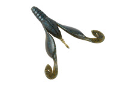
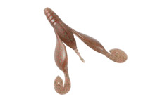
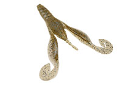
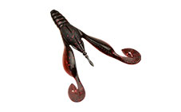

ウイニングクロー3.6インチ
（Winning Craw 3.6inch）
ウイニングクロー3.6インチ（Winning Craw 3.6inch）はDSTYLE（ディスタイル）のクローワームです。
落としてよし、誘ってよし。主なターゲットはブラックバスです。
着水から着底までのフォール中、そして着底後のロッドアクションでも、爪とアームがしっかり動いてバイトを誘う全方位型のクローワーム。こだわりを詰め込み、無駄を一切なくした、青木大介さんが提案する新しいクローワームです。

画像出典:DSTYLE公式HP
スペック
- メーカー
- DSTYLE（ディスタイル）
- タイプ
- クローワーム
- 全長
- 3.6インチ
- 重量
- 約8g
- 推奨リグ
- テキサスリグ（推奨フック 2/0〜3/0）
- その他
- Made in Japan
- 価格
- 847円（税込）
▼今すぐチェック
ウイニングクロー3.6インチの特徴
爪が水をかいて「もがく」。1つのワームで2段階のアクション
-
爪が水をかいて「もがく」
アームの先端（爪）が水をかいて自発的に「もがく」アクションを出し、それに合わせてアーム全体が動く。
-
接続部のカットで2段階のアクション
アーム先端の接続部（出荷時はつながった状態）をカットすると、より軽いシンカーでも動く。4g以下のシンカーならカット、それより重ければそのまま使う。
-
着底後も動き、カバーをすり抜ける
着底後もシェイクすると、アームの中央が支点になって先端がしっかり動く。不要なパーツをなくしたシンプル設計で、カバーへのすり抜けも良い。
ウイニングクロー3.6インチの使い方
基本はテキサスリグです。カバーやストラクチャーの際に落とし、フォール中の爪のアクションで食わせます。
着底したら、その場でシェイクしてアームを動かしましょう。4gより軽いシンカーを使う時は、爪の接続部をカットしておくとよく動きます。
ウイニングクロー3.6インチの得意な状況
カバーやストラクチャーの中にいるバスを、テキサスリグで撃って狙う時が得意です。
フォールで食わない時も、着底後のシェイクでもう一度誘えるので、1か所でじっくり粘りたい時にも向いています。
ワンポイント
シンカーの重さに合わせて接続部をカットするかどうかを決めるのがポイント。1つのワームで、軽いシンカーにも重いシンカーにも合わせられます。
オススメカラー
ウイニングクロー3.6インチは全13色。そのうち4色を紹介します（画像は公式のカラーチャートより）。

グリーンパンプキン・ブルーフレーク＆ペッパーまず1つ選ぶならこの色。どこでも使いやすい定番。

モエビミソエビを食べている時に。

レイクシュリンプエビ系のナチュラルカラー。

アメザリザリガニを食べている時に。
画像出典:DSTYLE公式HP
ウイニングクロー3.6インチに似ているルアー
-
 トルキーストレート4.8インチ
DSTYLE
詳細はこちら＞
トルキーストレート4.8インチ
DSTYLE
詳細はこちら＞
同じDSTYLEのストレートワーム。ネコリグで。
-
 ギーラカンス4インチ
DSTYLE
詳細はこちら＞
ギーラカンス4インチ
DSTYLE
詳細はこちら＞
同じDSTYLEのエラストマーワーム。テキサスにも使える。
-
イモグラブ40
ゲーリーヤマモト
詳細はこちら＞
バス用のワーム。